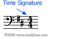
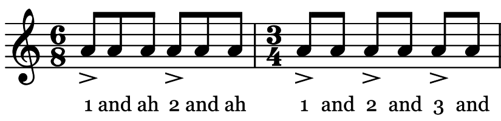

_ Ở lớp 6 và 7, chúng ta đã học qua các số chỉ nhịp 2/4, 3/4 và 4/4. Chúng ta thấy trong thực tế, phần lớn các bài hát được viết ở nhịp 2/4 và 4/4. Trong phần bài học này chúng ta sẽ tìm hiểu số chỉ nhịp mới 6/8. Nhưng trước tiên, chúng ta sẽ hệ thống lại lý thuyết số chỉ nhịp là như thế nào?
_ Số chỉ nhịp (time signature, meter signature, metre signature, measure signature) là hệ thống đo lường quy ước thời gian trong âm nhạc phương Tây dùng để chỉ rõ mỗi ô nhịp có bao nhiêu phách, nốt nào có giá trị tương đương với phách đó
_ Trong bản nhạc, số chỉ nhịp ghi sau khoá nhạc (clef) và hoá biểu (key signature) dưới dạng 2 số thẳng đứng chồng lên nhau.

_ Số ở trên cho biết có bao nhiêu phách trong một ô nhịp, số ở dưới cho biết giá trị mỗi phách bằng nốt gì. Trong hình trên, ta có nhịp 4/4. Như vậy, nhịp 4/4 có 4 phách trong một ô nhịp và mỗi phách bằng một nốt đen.
_ Trong thực tế, có rất nhiều loại số chỉ nhịp. Nhưng tất cả được chia thành 2 nhóm là: nhịp đơn (2/4, 3/4, 4/4) và nhịp kép (6/8)
_ Nhịp 6/8 mỗi ô nhịp có 6 phách, mỗi phách bằng một nốt móc đơn. Nhịp có hai trọng âm được nhấn ở phách 1 và phách 4.
_ Ta có thể đếm nhịp này như sau: 1,2,3,4,5,6,1,2,3,4,5,6.. và tiếp tục như vậy
_ Hoặc ta có thể đếm 1, 2 thay vì 6 cho gọn (gom 3 nốt móc đơn thành 1 nốt đen chấm)
_ Hai cách kể trên có thể gây khỏ hiểu. Đối với cách đầu tiên ta đếm 1 đến 6 và nhấn mạnh ở phách 1 và 4. Ở cách dưới ta đếm phách 1 nhưng nhấn mạnh và "dài hơi" cho tương đương 1 phách bằng 3 nốt móc đơn.
* Một thắc mắc là nếu chúng ta đếm nhịp 6/8 thành 1, 2 như vậy có thể xem như là 2/4 được không, cũng chỉ với 2 phách trong một ô nhịp.
_ Câu trả lời nằm ở cách chia phách trong một ô. Ở nhịp 2/4 có 2 phách mỗi ô và mỗi phách chia thành 2 cặp nốt móc đơn. Ở nhịp 6/8, nếu ta gói gọn lại 2 phách như cách kể trên thì lại chia thành 3 cặp nốt móc đơn. Nói cách khác, ở nhịp 2/4 ta đếm "1 và 2 và 1 và 2 và" thì ở nhịp 6/8 ta phải đếm "1 và ah 2 và ah 1 và ah 2 và ah"
_ Tương tự như vậy nếu ta so sánh với nhịp 3/4.

_ Nhịp 6/8 được dùng một số thể loại nhạc như: double jigs, polka, tarantella, marches, rock... Ở nhạc Việt Nam, ta có thể thấy điển hình ở dòng nhạc điệu waltz và slow. Ví dụ: Mùa xuân đầu tiên (Văn Cao), Làng tôi (Văn Cao)...